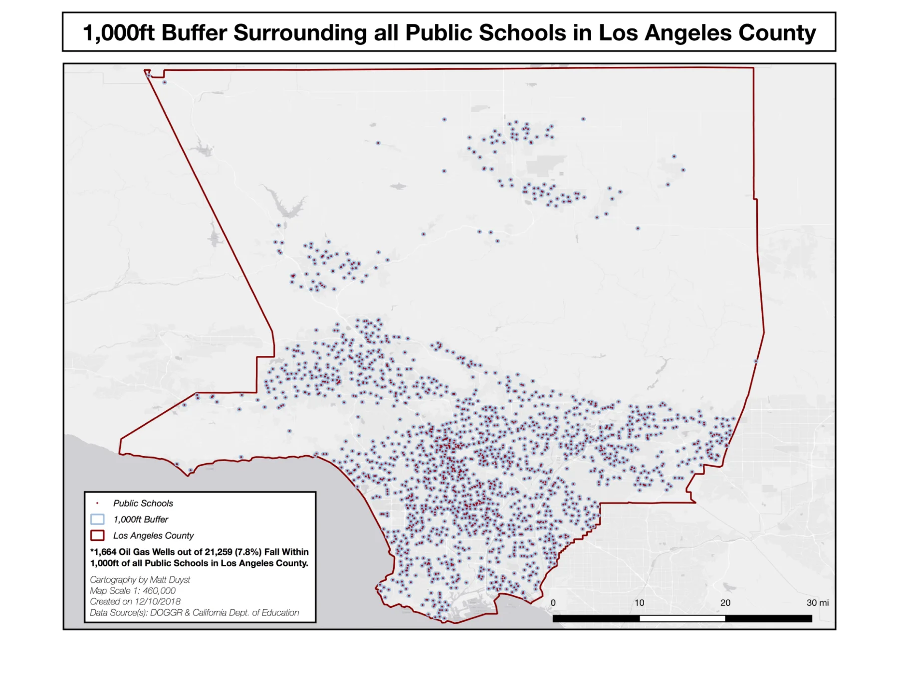
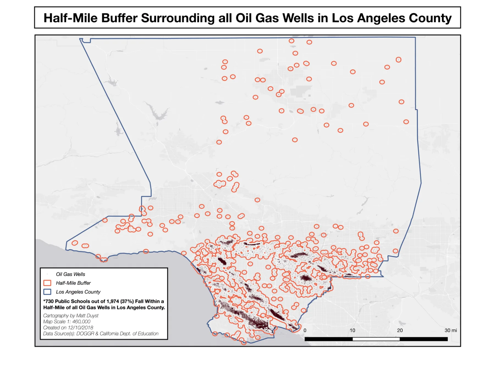
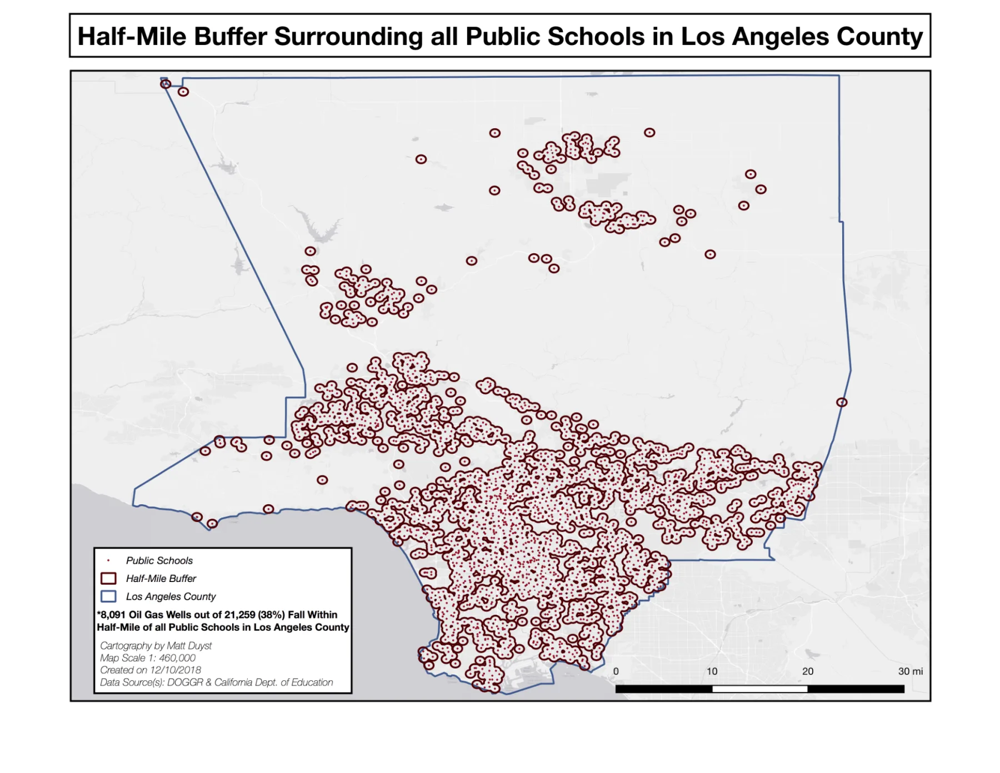
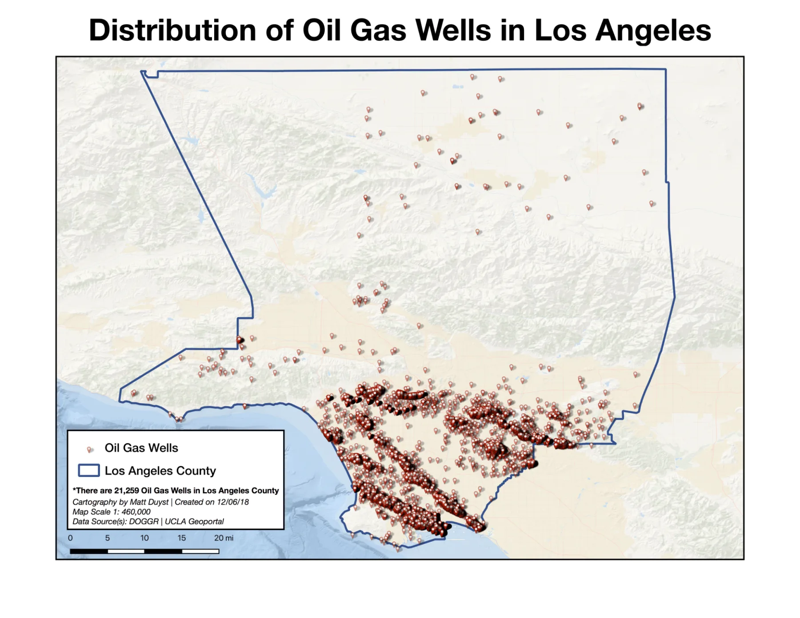
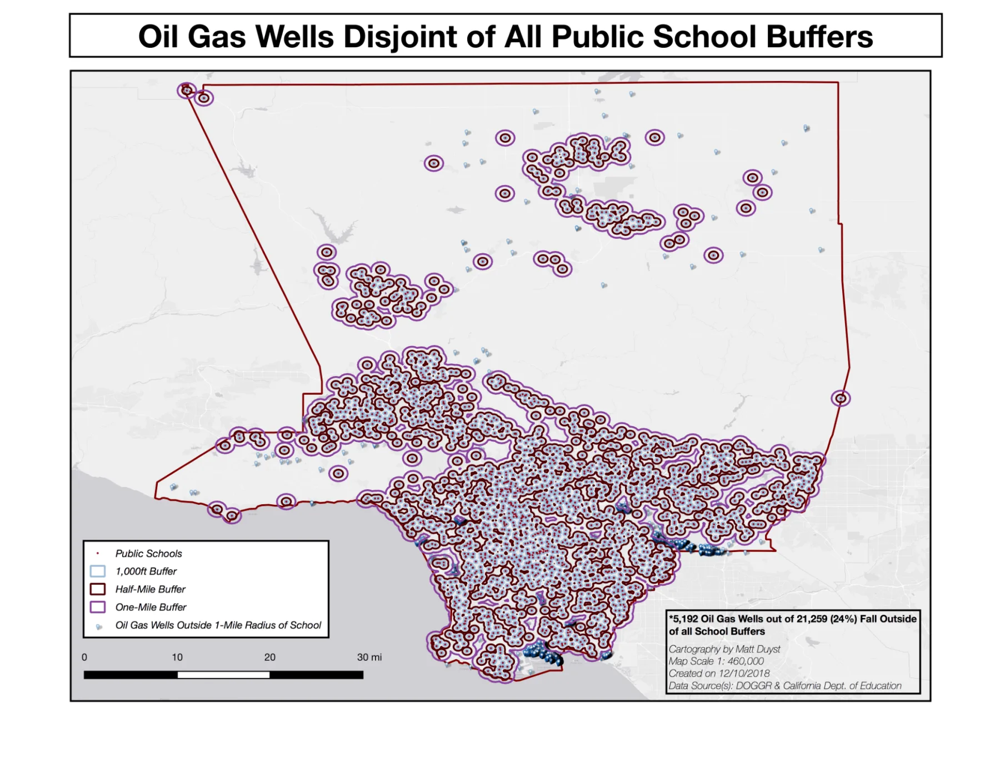
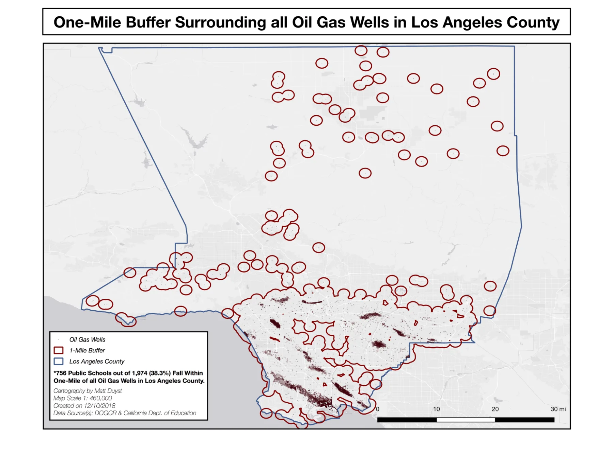
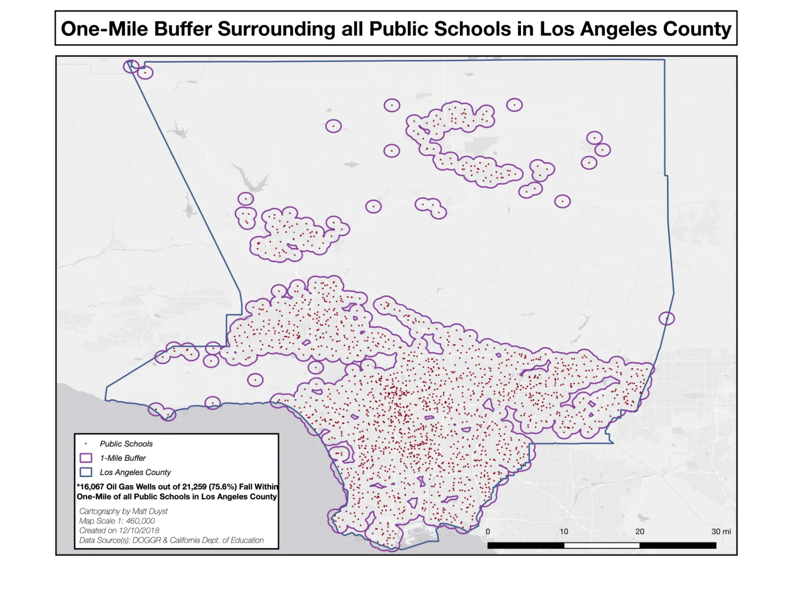
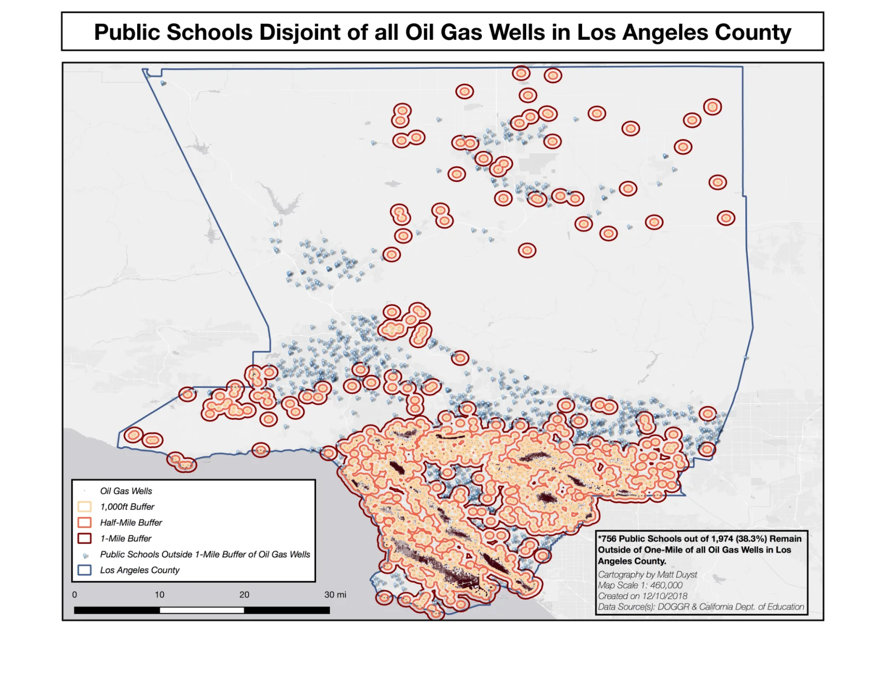
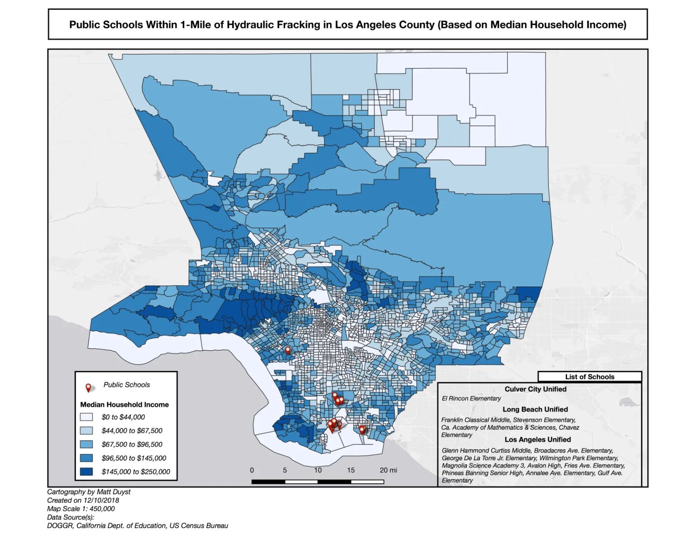

UCLA coursework, 2014 to 2018
Public School and Oil Gas Well Assessment in Los Angeles, CA
Abstract:
The curation of these maps focalized on the utilization of Geoprocessing techniques (namely Buffers), and application of ‘Select by Location’ tools within QGIS. When uploading the data points - the locations of oil gas wells and public schools in LA County - obtained from various sites, buffers were created of varying lengths around each data point. The buffers were assigned 3 different parameters: 1,000 feet, a half-mile, and one-mile. These 3 varying buffer segmentations were applied to both public school locations and oil gas well locations. To find which public schools fell within an oil gas well radius of fluctuating lengths (1,000 feet, half-mile, and one-mile), the ‘Select by Location’ tool was used; schools that intersected within the varying buffers were highlighted, and extracted as independent shapefiles. This same process was used for oil gas wells, but in reverse — the ‘Select by Location’ tool highlighted the oil gas wells that intersected with the varying buffers created around each public school in Los Angeles County.
The choropleth map included illustrates the spatial correlation of Median-Household Income in Los Angeles County, in an attempt to accentuate the placement of public schools that fall within 1-mile of oil gas wells that exhibit hydraulic Fracking. This process was completed through a simple join, with the Los Angeles County tracts acquired from the US Census Bureau, and the tract metadata provided through the UCLA Geoportal. The result was a map portraying the variability of household income, and the association of lower-income tracts holding a higher percentage/likelihood of having a public school within a one-mile radius of oil gas wells that exhibit hydraulic fracking.
Analysis of Proximity Based Hazards: - 21,259 oil gas wells are spread across the breadth of Los Angeles County. Of these, 1,664 fall within 1,000 feet of a given public school; 8,091 fall within a half-mile, and 16,067 (over 75%) fall within a one-mile radius of any given public school. - There are 1,974 public schools within the jurisdiction of Los Angeles County. Of these, 256 fall within 1,000 feet of an oil gas well; 730 fall within a half-mile, and 756 (almost 40%) fall within one-mile of any given oil gas well. - There are over 10 times as many oil gas wells as there are public schools in Los Angeles County.
Oil Gas Well Distribution in Relation to Public School Locations: Los Angeles, CA










Conclusion:
Because of the massive quantity of oil gas wells in LA County, it makes sense that there would be an overlap in place location — many oil gas wells being placed less than one-mile from one another. However, the severity of having so many public schools fall within this extent has grave implications. The most extensive hazard would be the likelihood of a gas leak, allowing harmful toxins to cause life-long health problems for Los Angeles County’s youth population. Deadly chemicals can quickly spread these short distances from public schools to oil gas well locations and may not be initially caught by the public eye. This, coupled with the fact that emission rates in oil gas wells are intensified, will harm the adolescents who are closest to the site (256 schools within such a short proximity as 1,000 feet).